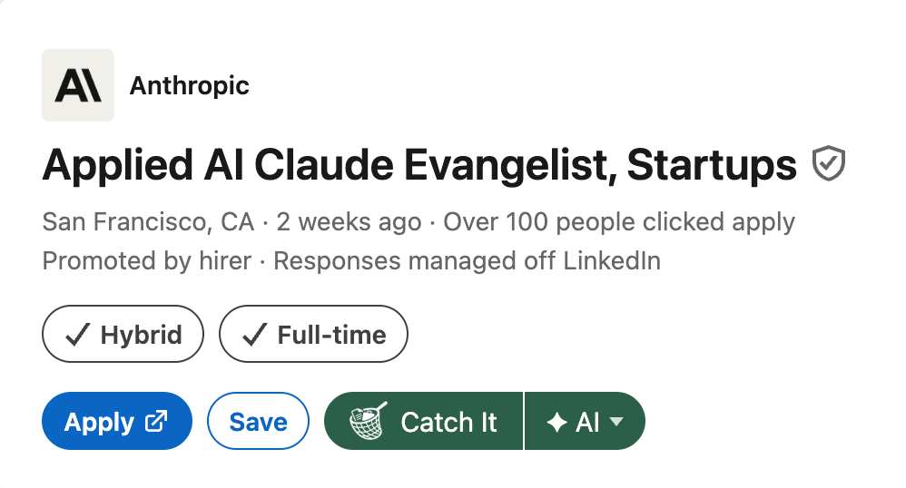

Before you install
Is Catchr free?
Yes. Catchr has no price, no account, and no subscription. Its AI runs on your own Google Gemini key, and Gemini has a free tier.
Gemini's free tier has daily limits. If you hit one, the AI tools work again once it resets. Google won't charge you unless you turn on billing for your key yourself.
Why do I need my own AI key?
Because there is no Catchr server. Your resume and the job go from your browser straight to Google's Gemini API using your key, so nobody in between sees them.
It's also why Catchr can be free: there's nothing for us to run or pay for. Getting a key takes about a minute. The setup guide walks you through it.
What does a paid Gemini key cost?
You pay Google for what you use, at Google's prices. Catchr charges nothing.
Billing is optional in most places. Turning it on stops Google using your requests to improve its AI. Google lists its current prices on its Gemini API pricing page.
What can Catchr see in my Google account?
Only the files it creates for you and the files you pick. It can't see the rest of your Drive, your email, or anything else.
In practice that's your job tracker sheet, the resume you choose, and the tailored resumes and prep docs Catchr makes. They're all yours, saved in your own Google Drive.
Does anyone see my resume?
We never do. Catchr reads your resume in your browser and sends it only to the AI, with your name and contact details removed first.
The removal works by matching text, so it can miss details written in an unusual way, like a nickname or an email address spelled out in words. If something must stay private, leave it out of the resume you use with Catchr. On Gemini's free tier, Google may use the rest (like your work history and skills) to improve its AI, and its reviewers may read it. The privacy policy has the full detail.
Which job sites does it work on?
LinkedIn, Indeed, Greenhouse, Lever, Wellfound, and Ashby. On those sites, the Catch It button sits right on the job posting.
On any other job site, click the Catchr icon in Chrome's toolbar. If Catchr can't find the job description there, paste it in and carry on.

Using Catchr
Do I need a tracker template?
No. Catchr makes a ready-to-use Google Sheet for you the first time you catch a job.
The free tracker template is for people who'd rather start by hand, or already have one. To use your own sheet, open Catchr's Settings and click Connect next to Tracker sheet.
How accurate is the fit score?
It's a guide, not a verdict. It compares your resume with what the job asks for and shows what matches and what's missing.
The same job can score a few points differently from one check to the next, and AI can make mistakes. Read the matches and gaps, not just the number.
Can I use Claude or ChatGPT?
Not yet. Catchr runs on Google Gemini today.
Does it work in the EU or UK?
Yes, with billing turned on. In the EU, Iceland, Liechtenstein, Norway, Switzerland, or the UK, Google allows only paid Gemini access.
Turn on billing for your key's project in Google AI Studio before you use the key with Catchr.
How do I remove Catchr and my data?
Uninstall the extension. That removes everything Catchr stored in your browser, including your API key.
To remove Catchr's access to your Google account, open your Google account's third-party connections and remove Catchr. Sheets and documents it made stay in your Drive until you delete them. To retire your key, delete it in Google AI Studio.
If something goes wrong
Find the message Catchr showed you. The fix is next to it.
-
“Your Gemini quota is used up for now.”
The free tier has daily limits. Wait a few minutes and try again. If it keeps happening, you've hit the day's limit, and the AI tools work again once it resets. You can check your limits in Google AI Studio.
-
“Gemini is busy. Try again in a minute.” or “Gemini took too long to respond.”
Google's servers are under load. Nothing is wrong with your setup. Wait a minute and try again.
-
“Your Gemini API key looks invalid.”
Copy your key again from Google AI Studio and paste it into Catchr's Settings. Check that nothing was cut off at either end.
-
“Your Gemini key needs to be restricted to the Gemini API.”
Open the key in Google AI Studio and click Restrict to Gemini API, or create a new key. Then try again.
-
“Google access expired.”
Open Catchr's Settings and reconnect your Google account.
-
“Catchr can’t open your resume file.”
Open Settings, click Replace next to your resume, and pick it again from Drive.
-
“No job description found”
Catchr couldn't read the description on this page. Copy it from the posting, click Paste it here, paste it in, and click Use this description.
Something else?
Email kevinjhernandez.dev@gmail.com and say what you were trying to do.
 Add to Chrome, it's free
Add to Chrome, it's free